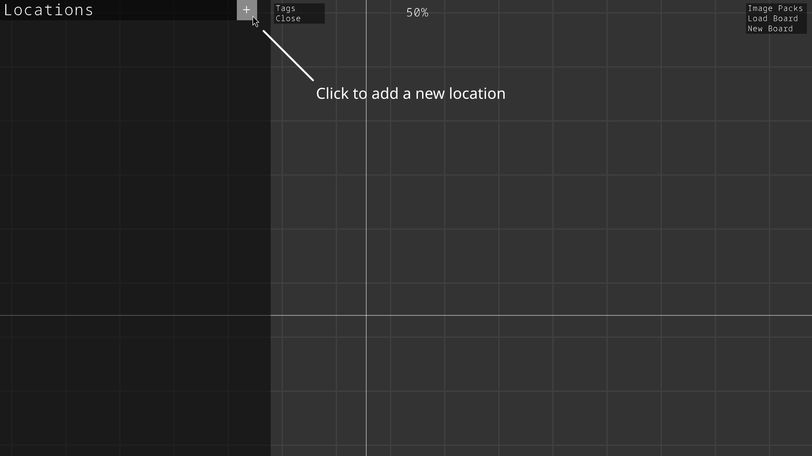
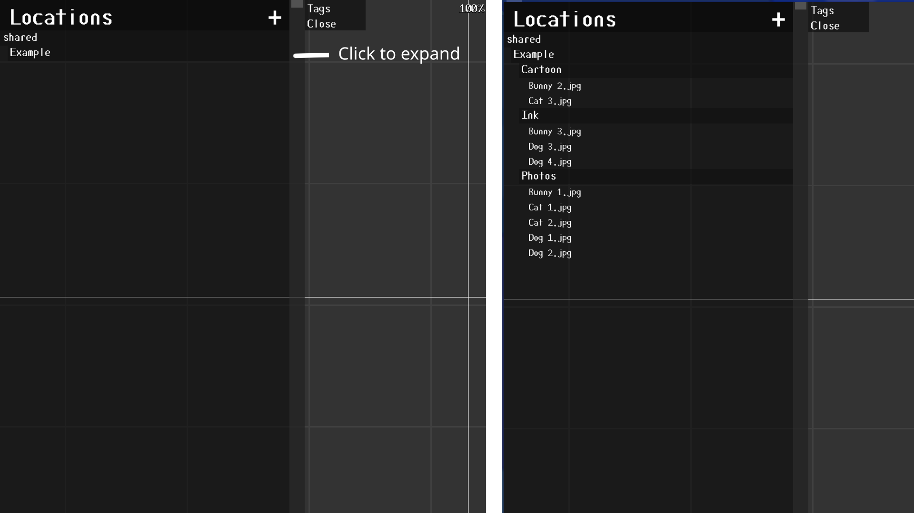
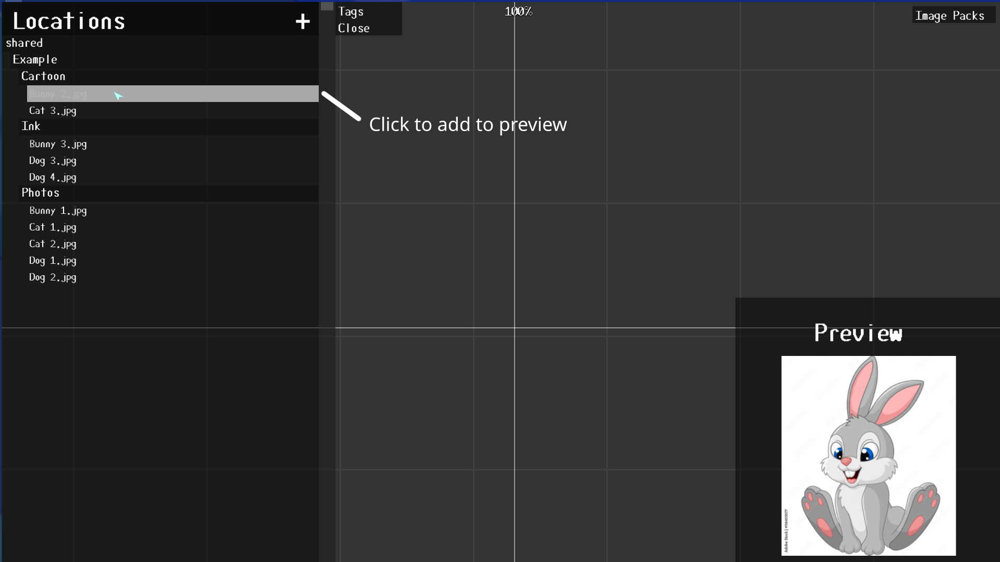
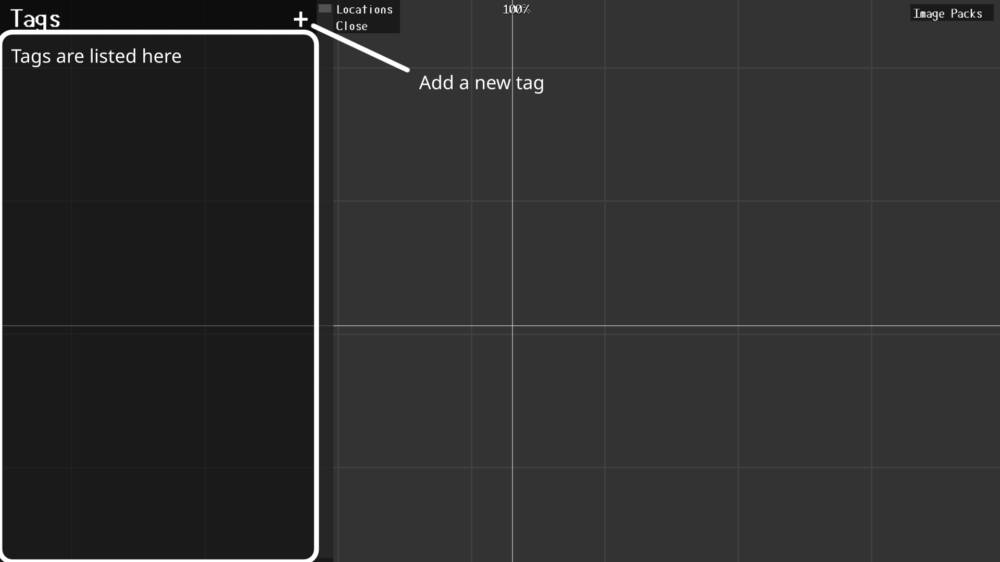
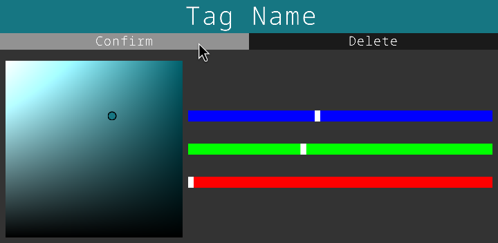
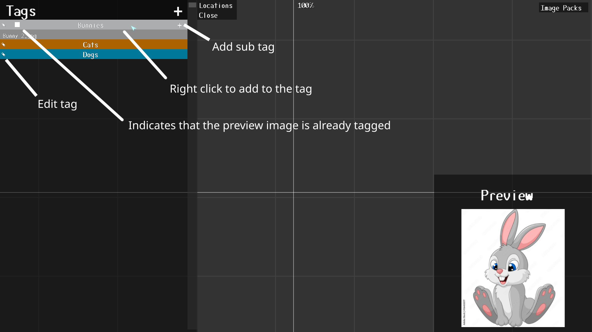
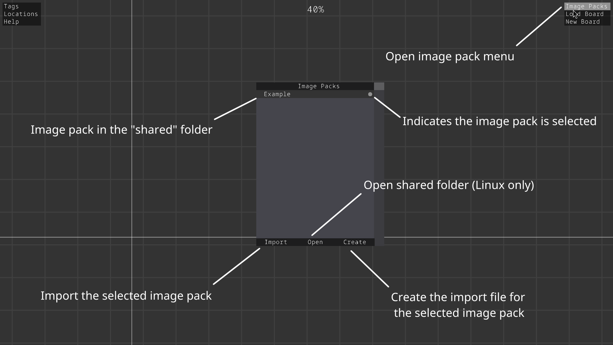
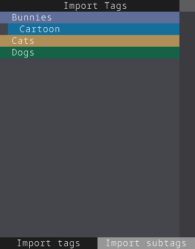

The Main window is where you can place and alter reference images. Below is a list of shortcuts

Image boards save the layout of images in a ".brd" file. These files are stored in the "boards" folder and can be saved/loaded from the board buttons in the top right corner or from dragging and dropping a ".brd" file from the boards folder. Image boards only save the images on the board and the view and scale of the main window. Tags and locations are not affected by the image board file.
Displays a list of saved locations. Locations point to folders containing images that you want to use as references. From this view, you can select images place them on the board. Pressing the "+" button will bring up a file explorer for you to select the folder you want to add.
Locations are displayed as a list. Clicking on a location will expand its contents and display all images (highlighted in white) and subfolders in that location. Likewise, clicking on subfolders will display there's contents.
Clicking on an image will add it to the image preview where and display a box around your mouse to show the size of the image. Clicking on the board afterwards will place the image on the board. While the image is in the preview, right clicking on a tag will assign/remove that tag from the image. A white box is displayed next to images that alread have tags assigned to them.
Tags allow you to organize large groups of images outside of folders while also being exportable through image packs. Click the "+" button to add a new tag.
Clicking the on the title bar will let you edit the tag name. The three sliders change the RGB values of the color picker and clicking on the color picker will change the color of the tag. The confirm button will submit the tag and the delete button delete the tag.
Tags are very similar to locations. Clicking on a tag will expand it's contents and show sub tags and clicking on an image will load it in the preview where you can place it on the board. Unlike locations, tags only support one level of subtags. Clicking the edit button will bring up the previously shown tag window where you can edit or delete the tag. Hovering over a tag and pressing the delete key will also delete the tag. Pressing the plus (+) button on a tag will create a sub tag.
There are two ways to tag an image. The first is to select an image from either the locations or tags menus and then right click the tag or sub tag you want to add it to. If you add an image to a sub tag, the image will automatically be added to the main tag as well.
The second way is to select all the images on the board that you want to tag and then right click. Under the tag option, all the tags are displayed in a sub menu and have sub menus for their sub tags. If all the selected images have the same tag, a full circle will be displayed before that tag. If only some of the images have the same tag, a hollow circle will be displayed before the tag. Clicking on a tag will add the selected images to the tag unless there is a full circle by it. If all the selected images have that tag, they will be removed from the tag.

Image packs allow users to share tag lists with other users. Image packs are stored in the "shared" folder and all images that you want to share must be in the "shared" folder. Click on the "Image Packs" button in the top right corner to bring up the menu. All sub folders in the "shared" folder are displayed in this menu.
The folders in an image pack can be though of as categories rather than tags. By selecting a folder, the user can choose what kind of images they want to import. Folders with a circle will mark them to be imported. Only images in those folders will be imported.

After clicking the import folders button, the program will display all the tags and subtags that the image pack will create/add to. While the "Include Subtags" button is highlighted, the program will include the subtags in the image pack. Otherwise it will ignore subtags.
To create an image pack, create a folder in the "shared" folder of RIA and give it the name of your image pack. Add subfolders to the image pack to categorize the images you want to used and move your images into the folders. Multiple levels of subfolders can be used.
Tag all your images. Images that are not tagged will not be saved to the image pack data. Subtags will be saved but can be toggled while importing.
Once all your images have been tagged, open the image pack menu, select your image pack and press the create button.
That's it. There should now be a file called "import.dat" in your image pack.
NOTE: When sharing, other users need both the import.dat file and the images. Images are not stored in import.dat.